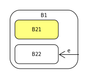

-
Interface Summary Interface Description Device<C extends ContextBase<C,D,S>,D extends Device<C,D,S>,S extends StateBase<C,D,S>> This empty interface should be extended or implemented to provide the type that is used by the context and or state to operate the device.StateBase<C extends ContextBase<C,D,S>,D extends Device<C,D,S>,S extends StateBase<C,D,S>> Methods that should be available in all states to make the state walker api work. -
Class Summary Class Description ContextBase<C extends ContextBase<C,D,S>,D extends Device<C,D,S>,S extends StateBase<C,D,S>> Base class for all statewalker state machine contexts.
Package nl.fontys.sebivenlo.statewalker Description
The package is designed with ease of use and type safety in mind, and
therefor can not completely avoid the complexity that goes with it. The
complexity left for the user is declaring the application specific Context,
Device, and State as a trisome in the generic declaration. To even further
reduce the complexity, the user is advised to declare State as an
intermediate interface that adds the application specific methods.
This library requires Java ≥ Java 8.
In the example, app, the declarations of AppContext, AppDevice, and AppState could then be as follows:
class AppContext extends ContextBase<AppContext, AppDevice, State>
class AppDevice implements Device<AppContext, AppDevice, State>
interface State extends StateBase<AppContext, AppDevice, State>
enum AppState implements State
When declaring your classes in this way you will by definition have some cyclic dependencies, which cannot be avoided really easily, so it might take some effort to convince the compiler it is okay. It may help to temporarily turn off the IDE feature to compile on save.
The standard use is also shown in the class diagram below, where the
app-package is the users application package. The <C,D,S,> generic
tokens should be understood as alphabetic mnemonics for Context, Device and
State.
Implementation detail.
The classes have been designed to reduce complexity as much as possible, in particular using the generic annotation needed.
This applies more to the use of the package then to the package it self,
which cannot avoid some unchecked warnings in its implementation. In the
implementation some use of @SuppresWarnings("unchecked") cannot be
avoided, because we use arrays as internal storage and the varargs parameters
list is an array too. We consider using varargs to be applicable here. If the
user considers that wasteful in the sense of array object creation, he is
advised to declare static constants of type array of state and use these
values as parameter in the transition implementing methods. This will work
exactly as intended, and has the benefit that the array allocation is done
only once, at class loading time.
Transition types
State walker provides the following transition types:simple transition
A {
@Override
public void e( Context ctx ) {
ctx.changeFromToState( "e", this, B );
}
}
Transition to sub-state
Note how the target states are passed in super-sub order.
A {
@Override
public void e( Context ctx ) {
ctx.changeFromToState( "e", this, B1, B2 );
}
}
Transition from sub-state

Note that the super state (A1) of A2 is mentioned in the transition call, not this.
A2 {
@Override
public void e( Context ctx ) {
ctx.changeFromToState( "e", A1, B );
}
}
Transition from super-state

Note that this transition is implemented in super state A1, so this is applicable here as it refers to that super state. call.
A1 {
@Override
public void e( Context ctx ) {
ctx.changeFromToState( "e", this, B );
}
}
Transition to sub-state implemented in super state
Note the use of the innerTranstion call, which only affects sub-states.
B1 {
@Override
public void e( Context ctx ) {
ctx.innerTransition( "e", this, B22 );
}
}
Transition to sub-state implemented in super state
Initials states are specified and implemented with a map lookup in the state enum source file. At initialisation, ContextBase calls the
getInitialState() once to create its own mapping. Note that the map
lookup is an implementation detail that avoids having to overwrite the
getInitialState() method in every state. The map used is an enum-map
which has O(1) lookup properties, like an array access.
A1 {
@Override
public void e( Context ctx ) {
ctx.changeFromToState( "e", this, B1 );
}
}
private static final EnumMap <S, S> initialMap = new EnumMap <>( S.class );
static {
initialMap.put( NULL, SI );
initialMap.put( B1, B2 );
}
@Override
public State getInitialState() {
return initialMap.get( this );
}
Shallow and Deep History
Deep and shallow history are implemented with sets and two methods that do a lookup in these sets. Both sets (different names of course) are implemented as follows:
private static final EnumSet <S> isHist = EnumSet. <S>of( B1 );
// with lookup
@Override
public boolean isInitialStateHistory() {
return isHist.contains( this );
}
With this mapping (and lookup by the ContextBase) the state implementation is
the same as in the examples with initial states. The initial states map is
also used in this case, taking the states that the history pseudo state
points at as value and the super state of the construct as the key.
Diagrams:
shallow history.

deep history.
- Author:
- Pieter van den Hombergh, Jeroen Beulen, Sander Lemans